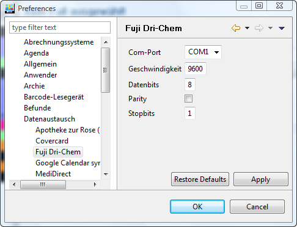
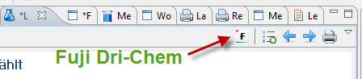
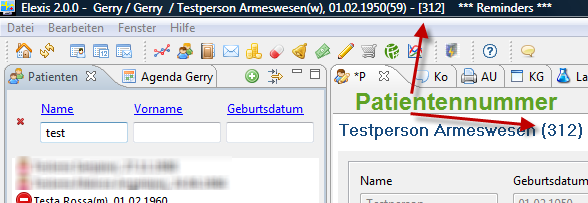
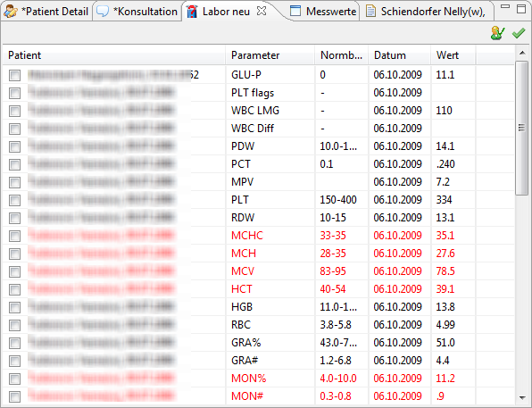
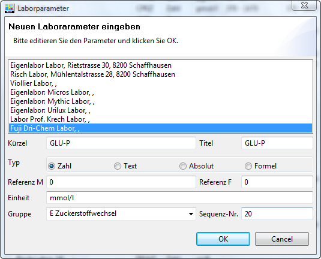

Ch.elexis.connect.fuji.drichem3500.feature.feature.group
| Version: | 3.0.0 |
| Kategorie: | Geräteanbindung |
| Beschreibung: | Anbindung von ‘Fuji Dri-Chem 3500’ und ‘Fuji Dri-Chem 4000’ an Elexis |
| Author: | |
| Letzte Bearbeitung: | 3. Dezember 2022 |
| Voraussetzungen: | Elexis 3.0 |
| Betriebssystem: | Windows, Mac, Linux |
| Lizenz: | Eclipse Public License (EPL) (Seit Dezember 2022) |
Contents
Einführung
Dieses Plugin dient dazu, die Laborgeräte ‘Fuji Dri-Chem 3500’ und ‘Fuji Dri-Chem 4000’ 1 an Elexis anzubinden. Mit diesem Plugin können die vom Dri-Chem gemessenen Laborparameter direkt in die Elexis-Datenbank eingelesen werden.
Voraussetzungen
Dieses Plugin benötigt Elexis V3.0 oder höher sowie ein Fuji Dri-Chem Gerät (Modell 3500 oder 4000). Ausserdem wird ein PC mit mindestens einer freien seriellen Schnittstelle 2.und ein korrekt verdrahtetes serielles Kabel3 zur Verbindung benötigt
Installation und Konfiguration
Download via 'Medelexis Abo-Management'. Verbinden Sie dann bei ausgeschalteten Geräten den Fuji mit einem seriellen Port des Computers.
Datenübertragung am Fuji einschalten
Die serielle Schnittstelle des Dri-Chem muss zunächst aktiviert und konfiguriert werden. Genaueres dazu finden Sie im Handbuch des Fuji. Kurz zusammengefasst:
- wählen Sie mit mode 46 Com1-> Host-Pc aus ([mode]46[enter]10[enter]). So legen Sie fest, dass der DriChem die für den PC aufbereiteten Daten auf Com1 ausgibt.
- Stellen Sie mit mode 43 die korrekten Parameter für den Com-Port ein. Empfohlen ist: 9600 Baud, 8 Datenbits, keine Parität, 1 Stopbit (9600,8,n,1).
Elexis Konfiguration
Starten Sie Elexis und gehen Sie dort zu Datei-Einstellungen-Datenaustausch-Roche Fuji-Dri-Chem (S. Abb. [fig:config]).  Hier stellen Sie den seriellen Port und die Schnittstellenparameter ein. Die Werte müssen mit den Einstellungen auf dem Fuji Gerät übereinstimmen (siehe oben). Wichtig: Nach dem Ändern dieser Parameter müssen Sie Elexis neu starten.
Verwendung
Wenn das Plugin korrekt installiert ist, erscheint in der Labor-View automatisch ein neuer Toolbar Button ‘Fuji’ (Abb. [fig:toolbarbutton]). Klicken Sie auf diesen Knopf um die Verbindung mit dem Gerät herzustellen.  Im Unterschied zu anderen Gerätekonnektoren bezieht dieses Plugin die Identifikation des Patienten vom Gerät. Es muss also in Elexis nichts weiter eingegeben werden. Das Plugin kann den ganzen Tag auf Empfang bleiben und trägt alle in dieser Zeit eintreffenden Daten in Elexis ein. Es ist daher wichtig, dass die Patientenidentifikation jeweils am Gerät korrekt eingetragen wird. Vor jedem neuen Patienten
- Drücken Sie am Fuji-Gerät auf [id] (Das Gerät schreibt: ‘No.=?’)
- drücken Sie [enter] (Das Gerät schreibt: ‘ID=’)
- Geben Sie die Elexis-Patientennummer (s. Abb. [fig:patnummer]) ein, zu dem die Probe gehört und drücken Sie [enter].
- stellen Sie die Probe und die Analysechips ins Gerät und drücken Sie [Start]
Sie können ohne weiteres Proben des nächsten Patienten einsetzen, bevor das Gerät fertig ist. Wichtig ist lediglich, dass Sie vor jedem neuen Patienten die ID korrekt eingeben wie oben gezeigt. 
Überprüfen
Es ist möglich, dass versehentlich eine falsche Patienten-ID eingegeben wurde. Es empfiehlt sich deshalb, auf dem Computer stets die ‘Labor-Neu’-View (S. Abb. [fig:laborneu]) geöffnet zu halten, damit man sieht, welche Resultate bei welchem Patienten eingelesen wurden. 
Normbereiche
Wenn ein Resultat zu einem bisher noch nciht in Elexis vorhandenen Laborparameter eintrifft, dann erstellt das Plugin wie üblich den dazugehörigen Parameter mit dem vom Dri-Chem vorgegebenen Namen (wie auf dem Dri-Chem Ausdruck, also z.B. GLU-P für Plasma-Glukose) Leider sendet das Dri-Chem keine Referenzbereiche. Sie müssen daher unter Datei-Einstellungen-Labor bei den DriChem Items selbst die Referenzen eintragen. 
Plattformen
Dieses Plugin wurde unter Windows XP, Vista und Xubuntu Linux getestet. Beachten Sie bitte, dass unter Linux die seriellen Ports nicht COM1 usw., sondern /dev/ttyS0 usw. heissen.
1 Vertrieb in der Schweiz durch Polymed
2 Alternative ohne Gewähr: RS-232 Adapter für USB oder Bluetooth
3 Bestellen Sie es am besten über Ihren Polymed-Repräsentanten